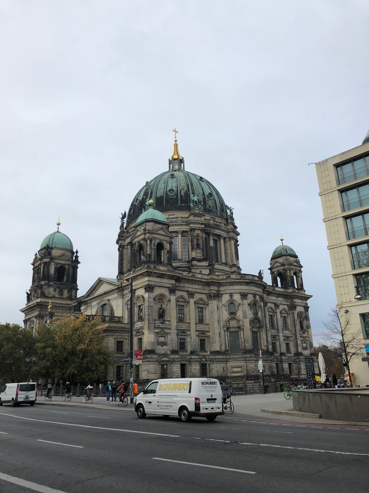
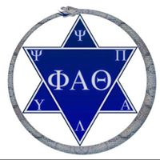
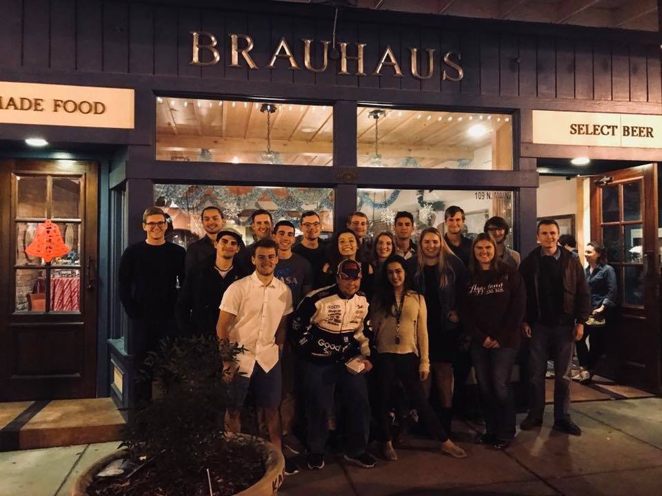
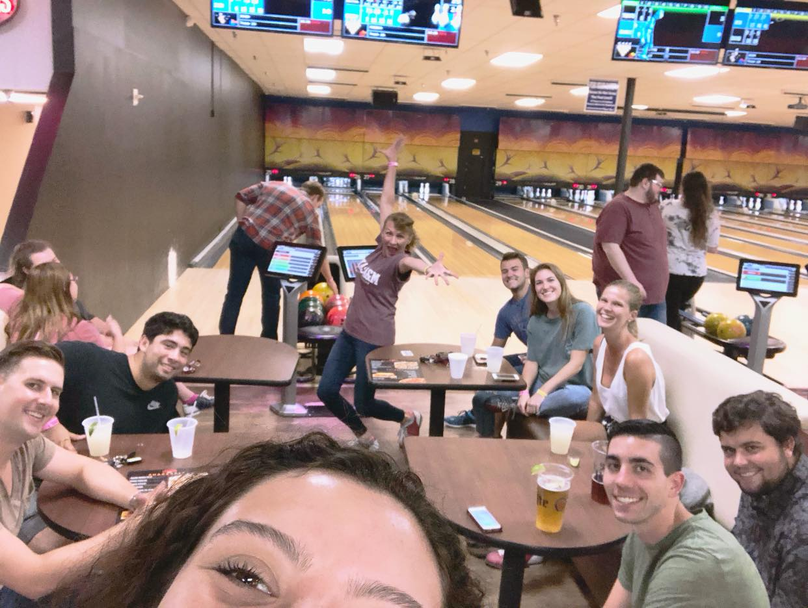
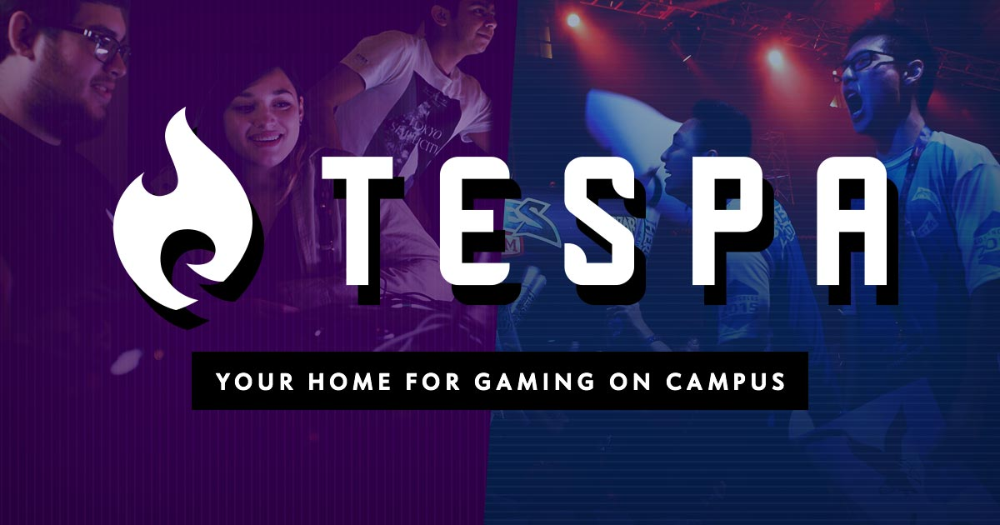
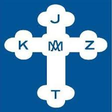

Study Abroad and Organizations
Here are some of the Study Abroad Experiences I have had and important organizations I have participated in over the years!
|

During the Fall of 2018, I spent time abroad in Berlin, Germany! This amazing opportunity introduced me to many new cultures, foods, and friends. I enjoyed the opportunity to test my German knowledge and capabilities, and I cannot wait for the opportunity to return.
|

My most recent organization that I joined is Phi Alpha Theta Honor Society of History (International! This organization has allowed me to connect with Historians interested in a variety of topics, it has allowed me to find a vast number of new research material, and it has allowed me a chance to spread my research
|

|

The above two photos are from the Aggie Deutschklub. The first is from a Bierstunde during my first semester in the organization. The second is of us celebrating Tag der Deutschen Einheit / German Unity Day in the Fall 2018.
|

Tespa is a collegiate esports organization I joined to help sponsor the growth of collegiate esports for the welfare of gamer athletes. I have participated in events both on campus and out of town including CWL Fort Worth hosted by MLG.
|
I have been a member of the Gold Prospectors Association of America for almost 10 years! While it has been just as long since I last made a trip up to Alaska to do some prospecting, I do enjoy keeping up to date with articles and shows.
|

My oldest organization to be a part of is the Fraternal Catholic Czech Society of Texas. My grandmother purchased me a life-long membership when I was born. Since then I have been to a variety of events. I tailgate with former Aggies and current KJZT members before every home football game.
|